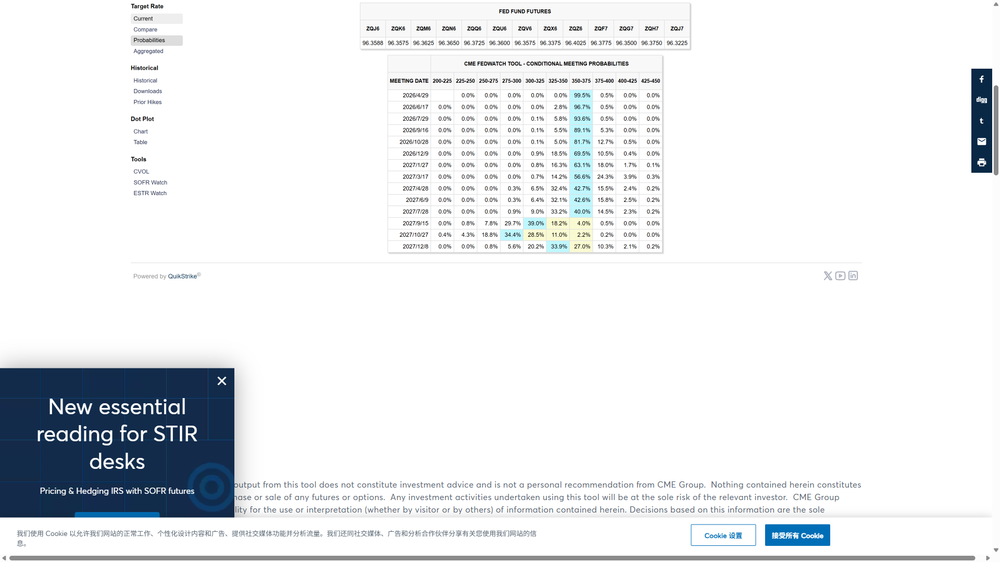

中东地缘跟踪
海峡跟踪
全球市场
战局形势
每日简报
实时新闻
央行表态
经济数据
研究视点
Polymarket
原油图谱
全部央行
全部官员
全部时间
今日
近3天
近7天
近30天
📊
CME FedWatch 利率预期
联邦基金期货隐含加息/降息概率
查看完整数据 ↗
下次FOMC会议 (5月7日)
--
维持不变
--
降息25bp
--
加息25bp

CME FedWatch 概率表
截图未找到，请按以下步骤更新：
访问
CME FedWatch Tool
点击左侧 "Probabilities"
截图概率表格区域（显示多个会议的完整概率矩阵）
保存为 data/fedwatch_screenshot.png
 中东地缘跟踪
中东地缘跟踪